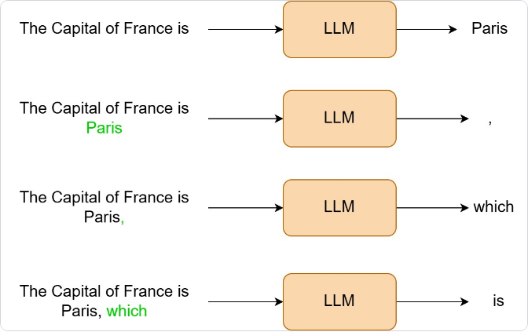
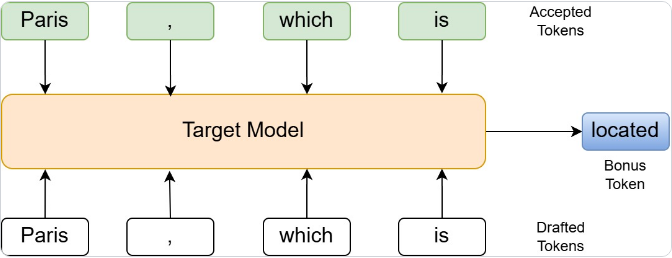

让我们谈谈speculative decoding：现代LLM推理中最优雅的优化技术之一。如果你曾想过如何在不牺牲输出质量的情况下从语言模型中多挤出2-3× 吞吐，你来对地方了。
读完这篇，你会理解到足以从零实现的深度。我们会覆盖动机、数学、实现细节，以及决定真实世界部署成败的微妙边界情况。
大语言模型生成文本时自回归进行：一次一个token。每一步：
1. 从内存加载模型权重（数十亿参数） 2. 对所有先前token计算attention 3. 为下一个token生成logits 4. 采样或argmax选下一个token 5. 重复
问题？现代GPU计算极强但内存访问相对慢。生成单个token时，你把数GB权重从HBM（高带宽内存）搬到计算单元，执行数万亿操作，然后产生……一个token。
这叫memory-bandwidth bound。计算单元大部分时间闲置等数据到达。对70B参数BF16模型，每token加载约140GB权重。若GPU有2TB/s内存带宽，每token理论最小70ms，无论计算多快。
那么如何更高效？
答案是Speculative Decoding，其关键思想是：验证K个token大约和生成1个token同耗时。

让这具体化。假设你在用GPT-2-XL，已生成序列：
标准方法：一次一个token。通常生成下4个token需要4次GPT-2-XL前向：每次加载全部15亿参数并在整个序列上跑attention。若每次100ms，总计400ms。
推测方法：一次验证多个token。现在假设有个小GPT-2模型能提前猜这4个token。你构造序列并做一次GPT-2-XL前向。这次单前向给出：位置is（France is后）的logits验证Paris；位置Paris验证逗号；位置逗号验证which；位置which验证is；位置is的bonus token免费。总计1次GPT-2-XL前向。
为什么耗时相同？验证K个token时：
1.加载模型权重一次（同成本）：处理5 token或9 token都加载同样15亿参数。这是贵部分且不变。 2.对K个更长序列跑attention（小K下可忽略）：9 token而非5 token的注意力稍多工作，但这是compute-bound非memory-bound。GPU数千核在内存加载时闲置；额外计算基本免费，反正发生在等内存时。小K（3-5 token）给100ms前向加约5-10ms，可忽略。 3.得到K个logit输出而非1个（免费）：transformer不只最后位置输出logits，而是*每个*位置都输出。通常丢到只剩最后一个。Speculative decoding里真用它验证猜测。9位置vs 5位置计算logits？只是几个额外矩阵乘，并行发生，基本免费。
魔法时刻：便宜猜测 + 快速验证。完整图景：4次GPT-2-XL前向成本400ms；4个GPT-2猜测4×8ms=32ms；1次GPT-2-XL验证105ms（4个额外token略长）；总计137ms。加速400/137 ≈ 2.9×。且这假设全对！即使只有50% 对，仍大幅领先。
关键洞察：若能便宜猜token（用小模型），一次全验证几乎免费。你刚把顺序问题变成部分并行问题。
"The capital of France is""The capital of France is Paris, which is"深入speculative decoding算法，试着从零构建：
Phase 1：Drafting。用小、快「draft model」自回归生成K个token。这个模型应该：比目标模型小得多（10-100× 少参数）；快得让生成K个token比一次目标前向便宜；与目标模型足够相似能蒙对一些token。
drafting阶段实现如下：
关键细节：我们存token和它们在draft model下的概率。acceptance步骤需要draft_probs。
def generate_draft_tokens(self, input_ids: torch.Tensor, num_tokens: int) -> Tuple[List[int], List[float]]:
"""
Use the draft model to generate candidate tokens.
Args:
input_ids: Current token sequence
num_tokens: Number of tokens to draft
Returns:
Tuple of (draft_tokens, draft_probabilities)
"""
draft_tokens = []
draft_probs = []
current_ids = input_ids.clone()
for _ in range(num_tokens):
with torch.no_grad():
outputs = self.draft_model(current_ids)
logits = outputs.logits[0, -1, :] # Last position
probs = torch.softmax(logits, dim=0)
# Sample next token
next_token = torch.multinomial(probs, num_samples=1)
token_id = next_token.item()
draft_tokens.append(token_id)
draft_probs.append(probs[token_id].item())
# Append token for next iteration
current_ids = torch.cat([current_ids, next_token.unsqueeze(0)], dim=1)
return draft_tokens, draft_probs这是魔法发生处。拿全部K个draft token一次前向穿过target model。
注意我们在做什么：把整个序列（原始输入 + 全部K个draft token）一次喂进target model。输出在每位置给出logits，意味着得到验证每个draft token的概率分布。
这是关键效率增益。代替K次独立前向（每token一次），做一次略长的前向。
# Create sequence with all draft tokens
draft_sequence = torch.cat([
input_ids,
torch.tensor([draft_tokens], device=self.device)
], dim=1)
# Single forward pass through target model
with torch.no_grad():
outputs = self.target_model(draft_sequence)
all_logits = outputs.logits[0] # Shape: [seq_len, vocab_size]现在到微妙部分：需要以保持target model精确概率分布的方式接受或拒绝每个draft token。
acceptance循环里发生的事：
在每个位置i，有：p_target：target model对该draft token的概率；p_draft：draft model对该token的概率（之前存的）。
def verify_draft_tokens(self, input_ids: torch.Tensor,
draft_tokens: List[int],
draft_probs: List[float]) -> List[int]:
"""
Verify draft tokens using the target model in a single forward pass.
This is where the magic happens! We process all draft tokens at once
and get probability distributions at each position.
"""
# Create sequence with all draft tokens
draft_sequence = torch.cat([
input_ids,
torch.tensor([draft_tokens], device=self.device)
], dim=1)
# Single forward pass through target model
with torch.no_grad():
outputs = self.target_model(draft_sequence)
all_logits = outputs.logits[0] # Shape: [seq_len, vocab_size]
# Verify each draft token
accepted_tokens = []
seq_len = input_ids.size(1)
for i in range(len(draft_tokens)):
# Get target model's probability distribution at this position
position = seq_len - 1 + i
target_probs = torch.softmax(all_logits[position], dim=0)
target_prob = target_probs[draft_tokens[i]].item()
draft_prob = draft_probs[i]
# Acceptance criterion: p_target(token) / p_draft(token)
acceptance_ratio = min(1.0, target_prob / draft_prob)
if torch.rand(1).item() < acceptance_ratio:
# Accept the draft token
accepted_tokens.append(draft_tokens[i])
else:
# Reject and sample from adjusted distribution
# Adjusted distribution: max(0, p_target - p_draft)
adjusted_probs = torch.clamp(
target_probs - torch.softmax(all_logits[position], dim=0),
min=0.0
)
if adjusted_probs.sum() > 0:
adjusted_probs = adjusted_probs / adjusted_probs.sum()
new_token = torch.multinomial(adjusted_probs, num_samples=1).item()
else:
# Fallback: sample from target distribution
new_token = torch.multinomial(target_probs, num_samples=1).item()
accepted_tokens.append(new_token)
# Stop verifying remaining tokens
break
# Bonus token: if all drafts accepted, get one more from target model
if len(accepted_tokens) == len(draft_tokens):
position = seq_len - 1 + len(draft_tokens)
bonus_probs = torch.softmax(all_logits[position], dim=0)
bonus_token = torch.multinomial(bonus_probs, num_samples=1).item()
accepted_tokens.append(bonus_token)
return accepted_tokens接受概率是：
为什么这个公式？ 情形1：p_target ≥ p_draft。target model认为该token *更可能*。以概率1.0接受。draft model保守了，没问题。 情形2：p_target< p_draft。draft model过度自信。以概率p_target/p_draft接受，按draft多过度自信下加权。
例如：p_draft=0.8且p_target=0.4，以0.4/0.8=0.5接受；p_draft=0.9且p_target=0.1，以0.1/0.9≈0.11接受。
调整分布。拒绝token时不能直接从中采样target model分布，那会引入偏差。改为从调整分布采样：p'(t) = max(0, p_target(t) - p_draft(t)) / Z，其中Z是归一化常数。这个调整移除draft model的「贡献」，只留target model加的。
直觉：draft model已在其采样的token上「用完」一些概率质量。我们要从剩下的采样。
这个拒绝采样过程被数学证明产生与标准自回归解码完全相同的分布。所以你不是近似，而是（期望上）逐bit相同结果。
Bonus Token。还有一个巧妙优化：若全部K个draft token被接受，我们得到了K+1个位置的logits（原K个位置加一个额外）。那额外位置基本免费，因为我们已付前向成本。所以从中多采样一个token。
这意味着完美draft让K+1个token花一次target model pass的价格！
acceptance_ratio = min(1.0, p_target / p_draft)p'(t) = max(0, p_target(t) - p_draft(t)) / Zadjusted_probs = torch.clamp(
target_probs - torch.softmax(all_logits[position], dim=0),
min=0.0
)
if adjusted_probs.sum() > 0:
adjusted_probs = adjusted_probs / adjusted_probs.sum()
new_token = torch.multinomial(adjusted_probs, num_samples=1).item()# Bonus token: if all drafts accepted, get one more from target model
if len(accepted_tokens) == len(draft_tokens):
position = seq_len - 1 + len(draft_tokens)
bonus_probs = torch.softmax(all_logits[position], dim=0)
bonus_token = torch.multinomial(bonus_probs, num_samples=1).item()
accepted_tokens.append(bonus_token)完整生成循环：
每次迭代：1. 用小模型draft K个token；2. 一次大模型前向验证全部K个；3. 接受1到K+1个token；4. 重复直到生成足够token。
def generate(self, prompt: str, max_new_tokens: int = 50,
num_draft_tokens: int = 4, verbose: bool = True) -> str:
"""
Generate text using speculative decoding.
"""
input_ids = self.tokenizer.encode(prompt, return_tensors='pt').to(self.device)
generated_tokens = 0
iterations = 0
total_accepted = 0
while generated_tokens < max_new_tokens:
iterations += 1
# Step 1: Draft tokens
draft_tokens, draft_probs = self.generate_draft_tokens(input_ids, num_draft_tokens)
# Step 2: Verify drafts
accepted_tokens = self.verify_draft_tokens(input_ids, draft_tokens, draft_probs)
# Update statistics
num_accepted = len(accepted_tokens)
total_accepted += num_accepted
generated_tokens += num_accepted
if verbose:
draft_text = self.tokenizer.decode(draft_tokens)
accepted_text = self.tokenizer.decode(accepted_tokens)
print(f"Iteration {iterations}:")
print(f" Drafted: {draft_text!r}")
print(f" Accepted: {accepted_text!r} ({num_accepted}/{len(draft_tokens)} tokens)")
# Add accepted tokens to sequence
input_ids = torch.cat([
input_ids,
torch.tensor([accepted_tokens], device=self.device)
], dim=1)
if generated_tokens >= max_new_tokens:
break
result = self.tokenizer.decode(input_ids[0], skip_special_tokens=True)
return result要用speculative decoding，需要同族的两个模型：
本例用GPT-2（124M参数）作draft，GPT-2-XL（1.5B参数）作target。draft模型约12× 更小，即约12× 更快推理。
重要：两模型必须用相同tokenizer和词表。否则需要token映射逻辑，增加复杂度。
class SpeculativeDecoder:
def __init__(self, draft_model_name: str, target_model_name: str):
"""
Initialize the speculative decoder with two models.
Args:
draft_model_name: Name of the small, fast model (e.g., "gpt2")
target_model_name: Name of the large, accurate model (e.g., "gpt2-xl")
"""
print(f"Loading draft model: {draft_model_name}")
self.draft_model = AutoModelForCausalLM.from_pretrained(draft_model_name)
self.draft_model.eval()
print(f"Loading target model: {target_model_name}")
self.target_model = AutoModelForCausalLM.from_pretrained(target_model_name)
self.target_model.eval()
self.tokenizer = AutoTokenizer.from_pretrained(draft_model_name)
self.tokenizer.pad_token = self.tokenizer.eos_token
# Move to GPU if available
self.device = "cuda" if torch.cuda.is_available() else "cpu"
self.draft_model.to(self.device)
self.target_model.to(self.device)分析理论加速。定义：T_target：一次target前向时间；T_draft：一次draft前向时间；α：平均接受率akablock efficiency（draft token被接受概率）；K：每迭代draft token数。
每迭代时间：
每迭代期望token数：若每个token有独立接受概率 α，期望接受数为：
对大K和合理 α，约等于：
每token有效时间：
示例计算。用现实数字：T_target=100ms、T_draft=8ms、K=4、α=0.6：
加速：100ms/60ms ≈ 1.67×。而且这还没算KV cache！有正确KV cache管理，加速可达2-3×。
最优K值。K（draft token数）的选择是权衡：太小：没充分利用验证pass；太大：浪费时间draft会被拒的token。最优K取决于：模型间速度比（T_target/T_draft）、接受率 α、内存约束。实践中K=3到K=5对大多数场景效果好。
T_iteration = K × T_draft + T_targetE[tokens] = 1 + α + α² + α³ + ... + α^(K-1) + α^K
= (1 - α^(K+1)) / (1 - α)E[tokens] ≈ 1 / (1 - α)T_effective = (K × T_draft + T_target) / E[tokens]T_iteration = 4 × 8ms + 100ms = 132ms
E[tokens] = (1 - 0.6^5) / (1 - 0.6) ≈ 2.2 tokens
T_effective = 132ms / 2.2 ≈ 60ms per token什么决定接受率？几个因素：
模型相似性：同族（GPT-2 → GPT-2-XL）的draft和target比不匹配模型接受率高。
任务难度：可预测文本（新闻、文档）α≈0.7；创意写作 α≈0.4-0.5；代码生成 α≈0.5-0.6。
上下文长度：更长上下文通常提升接受率，因为更多信息让token更可预测。
温度：更低温度（更贪婪）通常给更高接受率，因为两模型都收敛向明显选择。
跑代码时你会看到：
这种变化正常！有些迭代全接受，有些只接受一个token。
Iteration 1:
Drafted: ' a topic that'
Accepted: ' a topic' (2/4 tokens)
Iteration 2:
Drafted: ' that has been'
Accepted: ' that has been' (4/4 tokens)
Iteration 3:
Drafted: ' discussed extensively'
Accepted: ' discussed' (1/4 tokens)内存需求。你需要同时保持两模型在内存。GPT-2/GPT-2-XL：GPT-2约500MB、GPT-2-XL约6GB、总计约6.5GB。更大模型如LLaMA-7B（draft）和LLaMA-70B（target），约14GB + 140GB ≈ 150GB+。这常需多GPU。
KV Cache支持。上面实现没用KV caching，意味着每步对所有先前token重算attention。加KV cache显著提升：1.Draft model cache：为drafting维护独立KV cache；2.Target model cache：只缓存验证过的前缀；3.Cache invalidation：拒绝token时把cache截断到拒绝点。有KV caching可达2-3× 而非约1.5-2×。
批大小考虑。带批推理的speculative decoding棘手。批里不同序列可能接受不同数量token，制造ragged tensors。方案：独立处理（每序列单独，简单但低效）、Padding（pad到最大接受长度，浪费padding计算）、动态批（用高效处理变长序列的框架）。多数生产系统为简单用独立处理。
贪婪vs采样。上面实现用采样（torch.multinomial）。贪婪解码可简化：
贪婪解码通常接受率更高，因为两模型收敛到相同明显选择。
# Greedy acceptance: just check if draft token matches argmax
target_token = torch.argmax(target_probs)
if draft_tokens[i] == target_token:
accepted_tokens.append(draft_tokens[i])
else:
accepted_tokens.append(target_token)
break不是所有场景同等受益。这里它发光：
✅ 大模型 + 小draft模型（>10× 大小差）：速度差越大越赚。✅ 中高接受率（>40%）：draft太差则开销主导。✅ 单用户或小批推理：比大批易管理。✅ 中等上下文（<8K token）：极长上下文让验证更贵。✅ 可预测任务：问答、摘要、翻译比创意写作好。
它挣扎时： ❌ 小target模型：已快（<20ms/token）则绝对增益最小。❌ 低接受率（<30%）：draft开销超增益。❌ 极长上下文（>32K token）：验证pass变贵。❌ 高创意任务：低可预测性、更低接受率。❌ 内存受限环境：保持两模型是奢侈。
Speculative decoding是把顺序问题变部分并行的漂亮例子。关键洞察：1. 内存带宽而非计算是LLM推理瓶颈；2. 验证几乎免费（无论K都是一次前向）；3. 拒绝采样保持分布正确性所以得到精确结果；4. 大多token可预测让draft模型惊人有效。

实现需要小心处理：拒绝采样数学保持正确性；draft和target两模型概率跟踪；拒绝token时早停；bonus token提取提效。
结果？真实负载1.5-3× 加速、零质量退化。对概念上就是「猜和查」的技术不赖。
若你在规模部署LLM，speculative decoding该在你的优化工具箱里。数学微妙，但回报真实。
完整工作代码见：github.com/jaygala223/scratch。试试：
看你的LLM生成更快且不牺牲一点质量。
python3 speculative_decoding.py参考：https://galacodes.hashnode.dev/speculative-decoding